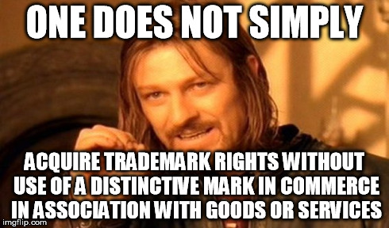
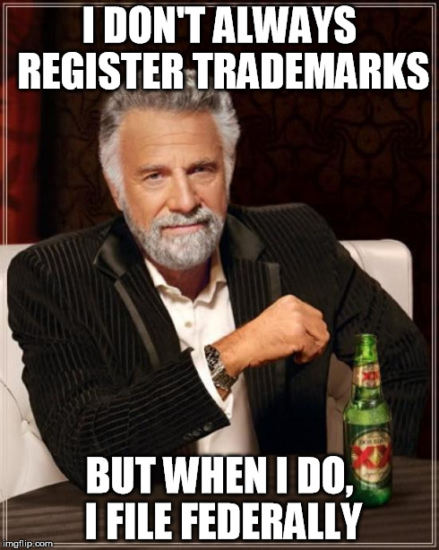

From the archive · Originally published October 25, 2014. This article reflects its original publication period and has not been substantively updated. Laws, procedures, and technology may have changed. Author and contact information are current.
Louisiana law permits businesses to register trademarks with the Louisiana Secretary of State; and, in fact, many businesses do so, thinking that a Louisiana trademark registration provides them with substantive rights. Unfortunately, they are wrong.
You see, a trademark is not the unqualified right to the exclusive use of a term or logo. In other words, a trademark is not just something a business can “claim” and have rights to as a result of that claim. Many people make this mistake, and think that they can simply “get” rights through the filing of a Louisiana trademark registration. Unfortunately…

Louisiana law is clear. A Louisiana Trademark Registration confers no substantive rights, as trademark rights come from use – not registration.
So, if trademark rights don’t come from registration, why does “use” create trademark rights – and why do businesses register trademarks?
First, use creates trademark rights because trademark rights are really about preventing consumer confusion and unfair competition. In other words, a trademark is a brand name, and nobody can be confused until the brand is out in the marketplace.
A trademark or service mark includes any word, name, symbol, device, or any combination, used or intended to be used to identify and distinguish the goods/services of one seller or provider from those of others, and to indicate the source of the goods/services.
The law recognizes that this can only occur when a mark is distinctive, which can occur either when a mark is inherently distinctive (and so, by its very nature, identifies goods as coming from a particular source – for example, Tide brand detergent) or when a mark has acquired distinctiveness through use (for a hypothetical example, “Cleans Well” brand detergent may not identify a particular brand at first, but, over time, consumers could come to recognize that “Cleans Well” is a particular brand of laundry detergent).
So, to summarize, a trademark is a mark used with goods or services; and trademark rights come about naturally, and are enforced by courts when consumers are likely to be confused or because a competitor is competing “unfairly.”
Second, businesses may register trademarks with the Louisiana Secretary of State because they (incorrectly) think that registration with the Louisiana Secretary of State provides them with substantive rights. Businesses may also register a trademark with the Louisiana Secretary of State because they think that this type of registration will “scare off” competitors. Unfortunately, although Louisiana law provides a way to register trademarks with the Louisiana Secretary of State, Louisiana law does not provide any substantive rights or remedies to the owner of a Louisiana Trademark Registration (beyond what rights they would have anyway). However, some industries may have a requirement that a trademark (or a trade name, which is different from a trademark) be registered. So, you should consult with your lawyer.
Federal Trademark Registration is the solution. Although a Federal Trademark Registration requires (among other things) use of a mark in commerce, there are many benefits to Federal Trademark Registration. Federal Trademark Registration provides:
- Public notice of a claim of ownership of a registered mark;
- A legal presumption of ownership of a registered mark and the owner’s exclusive right to use the registered mark in commerce nationwide on or in connection with the goods/services listed in the registration (and, a registered mark becomes incontestable after five years);
- “Constructive nationwide use” – in other words, it is though a registered mark has been used nationwide as of the registered mark’s application date, and this nationwide use can be extremely important when trying to stop others, particularly because the first, or “senior” user generally prevails;
- The ability to record the U.S. registration with the U.S. Customs and Border Protection (CBP) Service to prevent importation of infringing foreign goods;
- The right to use the federal registration symbol ®; and
- Listing in the United States Patent and Trademark Office’s online databases.
So, if you came to this post looking for information about a Louisiana Trademark Registration, you probably understand now that a Federal Trademark Registration is preferred over a Louisiana Trademark Registration. If you are interested in obtaining a Federal Trademark Registration, I recommend that you consult with your lawyer.
